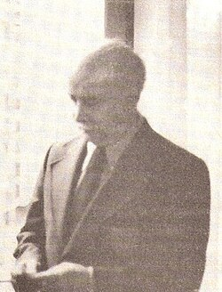

Charles Berlitz
Author, 1913 to 2003

A language-school heir and author best known for The Bermuda Triangle. 1
Open in the interactive Watcher
Related
- The Bermuda Triangle Wrote The Bermuda Triangle
- Bermuda Triangle
- The Roswell Incident Co-wrote The Roswell Incident
- Roswell
Sources
- Charles Berlitz Wikipedia